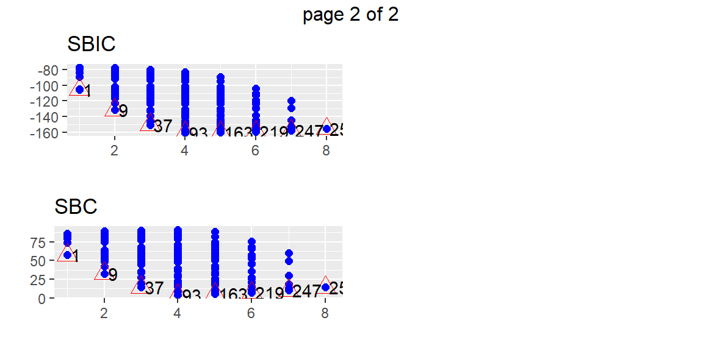

library(tidyverse)
library(olsrr)
library(GGally)
dat = surgical |>
mutate(
ln_y = log(y)
)
dat |> ggpairs()18 Stepwise and Best Subsets Regression
“Statistics cannot be any smarter than the people who use them. And in some cases, they can make smart people do dumb things.” - Charles Wheelan
We now discuss ways to determine a several potential subsets of predictor variables.
We start by discussing the criteria that could be used for comparing different models.
18.1 Best Subsets Procedure
As noted previously, the number of possible models, \[ 2^{p-1} \] grows rapidly with the number of predictors.
Evaluating all of the possible alternatives can be a daunting endeavor. However, for small \(p\) and a sample size that is not too large, we can fit all the possible models. From all of the models, we can pick a few models that are close in some criterion that we can examine further.
When the pool of potential predictor variables is very large, the “best” subset algorithms may require excessive computer time.
Under these conditions, one of the stepwise regression procedures, described next, may need to be employed to assist in the selection of predictor variables.
Example 18.1 (Surgical Unit data) The surgical unit data is available from the olsrr library. This library also has functions for conducting subsets regression.
This data is originally from Kutner1. It consists of data about survival of patients undergoing a liver operation. The response variable is number of days the patient survived after the operation. We will actually model the natural log of the survival time. The predictor variables are:
bcs: blood clotting scorepindex: prognistic indexenzyme_test: enzyme function test scoreliver_test: liver function test scoreage: age, in yearsgender: indicator variable for gender (0=male, 1=female)alc_mod: indicator variable for history of alcohol use (1=Moderate, 0=otherwise)alc_heavy: indicator variable for history of alcohol use (1=Heavy, 0=otherwise)
The tidymodels library does not have functions to do subsets regression (we will use olsrr instead).
No obvious nonlinear relationships seen from the scatterplot matrix.
Let’s first fit all \(2^8=258\) models using the ols_step_all_possible function.
fit = lm(ln_y ~ bcs + pindex + enzyme_test + liver_test+
age + gender + alc_mod + alc_heavy, data = dat)
fits = ols_step_all_possible(fit)
plot(fits)
From these plots, we can determine a few models that may be of interest to us. Suppose that we want the model 93 which appears to be the best model with four predictors by all of the criteria. We can find this model in the subsets with the following code.
fits |>
filter(mindex == 93) Index N Predictors R-Square Adj. R-Square Mallow's Cp
1 93 4 bcs pindex enzyme_test alc_heavy 0.8299187 0.8160345 5.733992If we want to just examine the best subset of predictors for each value of \(p\), then we can use the ols_step_best_subset function. This will return the criteria for only the best combination of predictors for each \(p\). The difference between ols_step_best_subset and ols_step_all_possible is that ols_step_all_possible does return every possible model whereas ols_step_best_subset returns only the best models.
subset = ols_step_best_subset(fit)
subset Best Subsets Regression
-----------------------------------------------------------------------------
Model Index Predictors
-----------------------------------------------------------------------------
1 enzyme_test
2 pindex enzyme_test
3 pindex enzyme_test alc_heavy
4 bcs pindex enzyme_test alc_heavy
5 bcs pindex enzyme_test gender alc_heavy
6 bcs pindex enzyme_test age gender alc_heavy
7 bcs pindex enzyme_test age gender alc_mod alc_heavy
8 bcs pindex enzyme_test liver_test age gender alc_mod alc_heavy
-----------------------------------------------------------------------------
Subsets Regression Summary
--------------------------------------------------------------------------------------------------------------------------------
Adj. Pred
Model R-Square R-Square R-Square C(p) AIC SBIC SBC MSEP FPE HSP APC
--------------------------------------------------------------------------------------------------------------------------------
1 0.4273 0.4162 0.3496 117.4783 51.4343 -105.4395 57.4013 7.6160 0.1463 0.0028 0.6168
2 0.6632 0.6500 0.6044 50.4918 24.7668 -131.5971 32.7228 4.5684 0.0893 0.0017 0.3765
3 0.7780 0.7647 0.7291 18.9015 4.2432 -150.4023 14.1881 3.0718 0.0610 0.0012 0.2575
4 0.8299 0.8160 0.7863 5.7340 -8.1306 -160.5329 3.8033 2.4030 0.0486 9e-04 0.2048
5 0.8375 0.8205 0.7828 5.5282 -8.5803 -160.2288 5.3426 2.3453 0.0482 9e-04 0.2032
6 0.8435 0.8235 0.7836 5.7725 -8.6129 -159.4064 7.2990 2.3077 0.0482 9e-04 0.2032
7 0.8460 0.8226 0.7807 7.0288 -7.4974 -157.6344 10.4035 2.3207 0.0492 0.0010 0.2076
8 0.8461 0.8187 0.7711 9.0000 -5.5320 -155.2573 14.3579 2.3719 0.0511 0.0010 0.2154
--------------------------------------------------------------------------------------------------------------------------------
AIC: Akaike Information Criteria
SBIC: Sawa's Bayesian Information Criteria
SBC: Schwarz Bayesian Criteria
MSEP: Estimated error of prediction, assuming multivariate normality
FPE: Final Prediction Error
HSP: Hocking's Sp
APC: Amemiya Prediction Criteria plot(subset)This dataset does not take too long to run with all possible models. However, some datasets will have many more possible predictors and more observations. Using ols_step_all_possible will take too long. We can then use an automatic search method.
18.1.1 Choosing a Subset of Models
The best subsets regressions procedure leads to the identification of a small number of subsets that are “good” according to a specified criterion.
Sometimes, one may wish to consider more than one criterion in evaluating possible subsets of predictor variables.
Once the investigator has identified a few “good” subsets for intensive examination, a final choice of the model variables must be made.
This choice is aided by examining outliers, checking model assumptions, and by the investigator’s knowledge of the subject under study, and is finally confirmed through model validation studies.
18.2 Stepwise Regression Procedures
18.2.1 Stepwise Regression
In those occasional cases when the pool of potential predictor variables contains 30 to 40 or even more variables, use of a “best” subsets algorithm may not be feasible.
An automatic search procedure that develops the “best” subset of \(X\) variables sequentially may then be helpful.
The forward stepwise regression procedure is probably the most widely used of the automatic search methods.
It was developed to economize on computational efforts as compared with the various all-possible-regressions procedures. Essentially, this search method develops a sequence of regression models, at each step adding or deleting an \(X\) variable.
The criterion for adding or deleting an \(X\) variable can be stated equivalently in terms of error sum of squares reduction, \(t^*\) statistic, \(F^*\) statistic, AIC, or BIC.
18.2.2 Limitations of Stepwise Methods
An essential difference between stepwise procedures and the “best” subsets algorithm is that stepwise search procedures end with the identification of a single regression model as “best.”
With the “best” subsets algorithm, on the other hand. several regression models can be identified as “good” for final consideration.
The identification of a single regression model as “best” by the stepwise procedures is a major weakness of these procedures.
Experience has shown that each of the stepwise search procedures can sometimes err by identifying a suboptimal regression model as “best.”
In addition, the identification of a single regression model may hide the fact that several other regression models may also be “good.”
Finally, the “goodness” of a regression model can only be established by a thorough examination using a variety of diagnostics.
What then can we do on those occasions when the pool of potential \(X\) variables is very large and an automatic search procedure must be utilized? Basically, we should use the subset identified by the automatic search procedure as a starting point for searching for other “good” subsets.
One possibility is to treat the number of \(X\) variables in the regression model identified by the automatic search procedure as being about the right subset size and then use the “best” subsets procedure for subsets of this and nearby sizes.
18.2.3 Forward Stepwise Regression
We shall describe the forward stepwise regression search algorithm in terms of the AIC statistic.
The stepwise regression routine first fits a simple linear regression model for each of the \(P - 1\) potential \(X\) variables.
For each simple linear regression model, the AIC statistic is obtained.
The X variable with the smallest AIC is the candidate for first addition.
Assume \(x_7\) is the variable entered at step 1. The stepwise regression routine now fits all regression models with two \(X\) variables, where \(x_7\) is one of the pair.
For each such regression model, the AIC corresponding to the newly added predictor \(x_k\) is obtained.
The \(X\) variable with the smallest AIC is the candidate for addition at the second stage.
If the AIC is smaller than AIC for model in the previous step (in this case, the model with only \(x_7\)), then that variable is added to the model that already has \(x_7\). Otherwise, the program terminates.
Suppose \(x_3\) is added at the second stage. Now the stepwise regression routine examines whether any of the other \(X\) variables already in the model should be dropped.
For our illustration, there is at this stage only one other \(X\) variable in the model, \(x_7\). At later stages, there would be a number of variables in the model besides the one last added.
The variable with the largest AIC is the candidate for deletion. If this AIC exceeds the AIC for when the variable is not in the model, the variable is dropped from the model; otherwise, it is retained.
Suppose \(x_7\) is retained so that both \(x_3\) and \(x_7\) are now in the model.
The stepwise regression routine now examines which \(X\) variable is the next candidate for addition, then examines whether any of the variables already in the model should now be dropped, and so on until no further \(X\) variables can either be added or deleted, at which point the search terminates.
Note that the stepwise regression algorithm allows a predictor variable, brought into the model at an earlier stage, to be dropped subsequently if it is no longer helpful in conjunction with variables added at later stages.
18.2.4 Other Stepwise Procedures
Other stepwise procedures are available to find a ``best” subset of predictor variables. We mention two of these.
Forward Selection
The forward selection search procedure is a simplified version of forward stepwise regression, omitting the test whether a variable once entered into the model should be dropped.
Backward Elimination
The backward elimination search procedure is the opposite of forward selection.
It begins with the model containing all potential \(X\) variables and identifies the one with the largest AIC. If the maximum AIC is greater than the full model, that \(X\) variable is dropped.
The model with the remaining \(P - 2\) \(X\) variables is then fitted, and the next candidate for dropping is identified.
This process continues until no further \(X\) variables can be dropped.
A stepwise modification can also be adapted that allows variables eliminated earlier to be added later: this modification is called the backward stepwise regression procedure.
Example 18.2 (Example 18.1 revisted) Let use forward stepwise to find a model.
library(tidyverse)
library(olsrr)
dat = surgical |>
mutate(
ln_y = log(y)
)
forward_step = ols_step_both_aic(fit, details = TRUE)Stepwise Selection Method
-------------------------
Candidate Terms:
1 . bcs
2 . pindex
3 . enzyme_test
4 . liver_test
5 . age
6 . gender
7 . alc_mod
8 . alc_heavy
Step 0: AIC = 79.52928
ln_y ~ 1
Variables Entered/Removed:
Enter New Variables
---------------------------------------------------------------------
Variable DF AIC Sum Sq RSS R-Sq Adj. R-Sq
---------------------------------------------------------------------
enzyme_test 1 51.434 5.471 7.334 0.427 0.416
liver_test 1 51.977 5.397 7.408 0.421 0.410
pindex 1 68.040 2.830 9.974 0.221 0.206
alc_heavy 1 73.443 1.781 11.024 0.139 0.123
bcs 1 78.149 0.777 12.028 0.061 0.043
gender 1 78.543 0.689 12.116 0.054 0.036
age 1 80.381 0.269 12.535 0.021 0.002
alc_mod 1 80.651 0.207 12.598 0.016 -0.003
---------------------------------------------------------------------
- enzyme_test added
Step 1 : AIC = 51.43434
ln_y ~ enzyme_test
Enter New Variables
-------------------------------------------------------------------
Variable DF AIC Sum Sq RSS R-Sq Adj. R-Sq
-------------------------------------------------------------------
pindex 1 24.767 8.492 4.313 0.663 0.650
liver_test 1 34.156 7.673 5.132 0.599 0.583
bcs 1 40.602 7.022 5.783 0.548 0.531
alc_heavy 1 44.323 6.609 6.195 0.516 0.497
gender 1 51.499 5.729 7.075 0.447 0.426
age 1 51.645 5.710 7.095 0.446 0.424
alc_mod 1 52.947 5.537 7.268 0.432 0.410
-------------------------------------------------------------------
- pindex added
Step 2 : AIC = 24.76682
ln_y ~ enzyme_test + pindex
Remove Existing Variables
--------------------------------------------------------------------
Variable DF AIC Sum Sq RSS R-Sq Adj. R-Sq
--------------------------------------------------------------------
pindex 1 51.434 5.471 7.334 0.427 0.416
enzyme_test 1 68.040 2.830 9.974 0.221 0.206
--------------------------------------------------------------------
Enter New Variables
-------------------------------------------------------------------
Variable DF AIC Sum Sq RSS R-Sq Adj. R-Sq
-------------------------------------------------------------------
alc_heavy 1 4.243 9.963 2.842 0.778 0.765
bcs 1 9.084 9.696 3.109 0.757 0.743
liver_test 1 17.234 9.190 3.615 0.718 0.701
alc_mod 1 23.834 8.720 4.085 0.681 0.662
age 1 24.663 8.656 4.148 0.676 0.657
gender 1 25.727 8.574 4.231 0.670 0.650
-------------------------------------------------------------------
- alc_heavy added
Step 3 : AIC = 4.243223
ln_y ~ enzyme_test + pindex + alc_heavy
Remove Existing Variables
--------------------------------------------------------------------
Variable DF AIC Sum Sq RSS R-Sq Adj. R-Sq
--------------------------------------------------------------------
alc_heavy 1 24.767 8.492 4.313 0.663 0.650
pindex 1 44.323 6.609 6.195 0.516 0.497
enzyme_test 1 56.640 5.022 7.782 0.392 0.368
--------------------------------------------------------------------
Enter New Variables
-------------------------------------------------------------------
Variable DF AIC Sum Sq RSS R-Sq Adj. R-Sq
-------------------------------------------------------------------
bcs 1 -8.131 10.627 2.178 0.830 0.816
liver_test 1 -3.424 10.428 2.376 0.814 0.799
gender 1 3.572 10.100 2.705 0.789 0.772
age 1 4.879 10.033 2.771 0.784 0.766
alc_mod 1 5.783 9.987 2.818 0.780 0.762
-------------------------------------------------------------------
- bcs added
Step 4 : AIC = -8.130569
ln_y ~ enzyme_test + pindex + alc_heavy + bcs
Remove Existing Variables
--------------------------------------------------------------------
Variable DF AIC Sum Sq RSS R-Sq Adj. R-Sq
--------------------------------------------------------------------
bcs 1 4.243 9.963 2.842 0.778 0.765
alc_heavy 1 9.084 9.696 3.109 0.757 0.743
pindex 1 36.524 7.638 5.167 0.596 0.572
enzyme_test 1 57.529 5.181 7.624 0.405 0.369
--------------------------------------------------------------------
Enter New Variables
-------------------------------------------------------------------
Variable DF AIC Sum Sq RSS R-Sq Adj. R-Sq
-------------------------------------------------------------------
gender 1 -8.580 10.723 2.081 0.837 0.821
age 1 -8.048 10.703 2.102 0.836 0.819
liver_test 1 -7.170 10.668 2.136 0.833 0.816
alc_mod 1 -6.689 10.649 2.155 0.832 0.814
-------------------------------------------------------------------
- gender added
Step 5 : AIC = -8.580332
ln_y ~ enzyme_test + pindex + alc_heavy + bcs + gender
Remove Existing Variables
--------------------------------------------------------------------
Variable DF AIC Sum Sq RSS R-Sq Adj. R-Sq
--------------------------------------------------------------------
gender 1 -8.131 10.627 2.178 0.830 0.816
bcs 1 3.572 10.100 2.705 0.789 0.772
alc_heavy 1 10.176 9.748 3.057 0.761 0.742
pindex 1 35.768 7.895 4.910 0.617 0.585
enzyme_test 1 56.105 5.649 7.155 0.441 0.396
--------------------------------------------------------------------
Enter New Variables
-------------------------------------------------------------------
Variable DF AIC Sum Sq RSS R-Sq Adj. R-Sq
-------------------------------------------------------------------
age 1 -8.613 10.800 2.004 0.843 0.823
alc_mod 1 -7.151 10.745 2.059 0.839 0.819
liver_test 1 -7.005 10.740 2.065 0.839 0.818
-------------------------------------------------------------------
- age added
Step 6 : AIC = -8.612898
ln_y ~ enzyme_test + pindex + alc_heavy + bcs + gender + age
Remove Existing Variables
--------------------------------------------------------------------
Variable DF AIC Sum Sq RSS R-Sq Adj. R-Sq
--------------------------------------------------------------------
age 1 -8.580 10.723 2.081 0.837 0.821
gender 1 -8.048 10.703 2.102 0.836 0.819
bcs 1 4.113 10.172 2.633 0.794 0.773
alc_heavy 1 9.435 9.899 2.905 0.773 0.749
pindex 1 36.193 8.036 4.769 0.628 0.589
enzyme_test 1 57.529 5.725 7.080 0.447 0.390
--------------------------------------------------------------------
Enter New Variables
-------------------------------------------------------------------
Variable DF AIC Sum Sq RSS R-Sq Adj. R-Sq
-------------------------------------------------------------------
alc_mod 1 -7.497 10.833 1.972 0.846 0.823
liver_test 1 -6.673 10.802 2.002 0.844 0.820
-------------------------------------------------------------------
No more variables to be added or removed.
Final Model Output
------------------
Model Summary
-------------------------------------------------------------
R 0.918 RMSE 0.207
R-Squared 0.843 Coef. Var 3.211
Adj. R-Squared 0.823 MSE 0.043
Pred R-Squared 0.784 MAE 0.162
-------------------------------------------------------------
RMSE: Root Mean Square Error
MSE: Mean Square Error
MAE: Mean Absolute Error
ANOVA
-------------------------------------------------------------------
Sum of
Squares DF Mean Square F Sig.
-------------------------------------------------------------------
Regression 10.800 6 1.800 42.209 0.0000
Residual 2.004 47 0.043
Total 12.805 53
-------------------------------------------------------------------
Parameter Estimates
---------------------------------------------------------------------------------------
model Beta Std. Error Std. Beta t Sig lower upper
---------------------------------------------------------------------------------------
(Intercept) 4.054 0.235 17.272 0.000 3.582 4.527
enzyme_test 0.015 0.001 0.653 10.909 0.000 0.012 0.018
pindex 0.014 0.002 0.473 8.051 0.000 0.010 0.017
alc_heavy 0.351 0.076 0.280 4.597 0.000 0.197 0.505
bcs 0.072 0.019 0.233 3.839 0.000 0.034 0.109
gender 0.087 0.058 0.089 1.512 0.137 -0.029 0.203
age -0.003 0.003 -0.078 -1.343 0.186 -0.009 0.002
---------------------------------------------------------------------------------------Let’s now use forward selection:
library(tidyverse)
library(olsrr)
forward_sel = ols_step_forward_aic(fit, details = TRUE)Forward Selection Method
------------------------
Candidate Terms:
1 . bcs
2 . pindex
3 . enzyme_test
4 . liver_test
5 . age
6 . gender
7 . alc_mod
8 . alc_heavy
Step 0: AIC = 79.52928
ln_y ~ 1
---------------------------------------------------------------------
Variable DF AIC Sum Sq RSS R-Sq Adj. R-Sq
---------------------------------------------------------------------
enzyme_test 1 51.434 5.471 7.334 0.427 0.416
liver_test 1 51.977 5.397 7.408 0.421 0.410
pindex 1 68.040 2.830 9.974 0.221 0.206
alc_heavy 1 73.443 1.781 11.024 0.139 0.123
bcs 1 78.149 0.777 12.028 0.061 0.043
gender 1 78.543 0.689 12.116 0.054 0.036
age 1 80.381 0.269 12.535 0.021 0.002
alc_mod 1 80.651 0.207 12.598 0.016 -0.003
---------------------------------------------------------------------
- enzyme_test
Step 1 : AIC = 51.43434
ln_y ~ enzyme_test
-------------------------------------------------------------------
Variable DF AIC Sum Sq RSS R-Sq Adj. R-Sq
-------------------------------------------------------------------
pindex 1 24.767 3.021 4.313 0.663 0.650
liver_test 1 34.156 2.202 5.132 0.599 0.583
bcs 1 40.602 1.551 5.783 0.548 0.531
alc_heavy 1 44.323 1.139 6.195 0.516 0.497
gender 1 51.499 0.258 7.075 0.447 0.426
age 1 51.645 0.239 7.095 0.446 0.424
alc_mod 1 52.947 0.066 7.268 0.432 0.410
-------------------------------------------------------------------
- pindex
Step 2 : AIC = 24.76682
ln_y ~ enzyme_test + pindex
-------------------------------------------------------------------
Variable DF AIC Sum Sq RSS R-Sq Adj. R-Sq
-------------------------------------------------------------------
alc_heavy 1 4.243 1.471 2.842 0.778 0.765
bcs 1 9.084 1.204 3.109 0.757 0.743
liver_test 1 17.234 0.698 3.615 0.718 0.701
alc_mod 1 23.834 0.228 4.085 0.681 0.662
age 1 24.663 0.165 4.148 0.676 0.657
gender 1 25.727 0.082 4.231 0.670 0.650
-------------------------------------------------------------------
- alc_heavy
Step 3 : AIC = 4.243223
ln_y ~ enzyme_test + pindex + alc_heavy
-------------------------------------------------------------------
Variable DF AIC Sum Sq RSS R-Sq Adj. R-Sq
-------------------------------------------------------------------
bcs 1 -8.131 0.664 2.178 0.830 0.816
liver_test 1 -3.424 0.466 2.376 0.814 0.799
gender 1 3.572 0.137 2.705 0.789 0.772
age 1 4.879 0.071 2.771 0.784 0.766
alc_mod 1 5.783 0.024 2.818 0.780 0.762
-------------------------------------------------------------------
- bcs
Step 4 : AIC = -8.130569
ln_y ~ enzyme_test + pindex + alc_heavy + bcs
-------------------------------------------------------------------
Variable DF AIC Sum Sq RSS R-Sq Adj. R-Sq
-------------------------------------------------------------------
gender 1 -8.580 0.097 2.081 0.837 0.821
age 1 -8.048 0.076 2.102 0.836 0.819
liver_test 1 -7.170 0.042 2.136 0.833 0.816
alc_mod 1 -6.689 0.022 2.155 0.832 0.814
-------------------------------------------------------------------
- gender
Step 5 : AIC = -8.580332
ln_y ~ enzyme_test + pindex + alc_heavy + bcs + gender
-------------------------------------------------------------------
Variable DF AIC Sum Sq RSS R-Sq Adj. R-Sq
-------------------------------------------------------------------
age 1 -8.613 0.077 2.004 0.843 0.823
alc_mod 1 -7.151 0.022 2.059 0.839 0.819
liver_test 1 -7.005 0.016 2.065 0.839 0.818
-------------------------------------------------------------------
- age
Step 6 : AIC = -8.612898
ln_y ~ enzyme_test + pindex + alc_heavy + bcs + gender + age
-------------------------------------------------------------------
Variable DF AIC Sum Sq RSS R-Sq Adj. R-Sq
-------------------------------------------------------------------
alc_mod 1 -7.497 0.033 1.972 0.846 0.823
liver_test 1 -6.673 0.002 2.002 0.844 0.820
-------------------------------------------------------------------
No more variables to be added.
Variables Entered:
- enzyme_test
- pindex
- alc_heavy
- bcs
- gender
- age
Final Model Output
------------------
Model Summary
-------------------------------------------------------------
R 0.918 RMSE 0.207
R-Squared 0.843 Coef. Var 3.211
Adj. R-Squared 0.823 MSE 0.043
Pred R-Squared 0.784 MAE 0.162
-------------------------------------------------------------
RMSE: Root Mean Square Error
MSE: Mean Square Error
MAE: Mean Absolute Error
ANOVA
-------------------------------------------------------------------
Sum of
Squares DF Mean Square F Sig.
-------------------------------------------------------------------
Regression 10.800 6 1.800 42.209 0.0000
Residual 2.004 47 0.043
Total 12.805 53
-------------------------------------------------------------------
Parameter Estimates
---------------------------------------------------------------------------------------
model Beta Std. Error Std. Beta t Sig lower upper
---------------------------------------------------------------------------------------
(Intercept) 4.054 0.235 17.272 0.000 3.582 4.527
enzyme_test 0.015 0.001 0.653 10.909 0.000 0.012 0.018
pindex 0.014 0.002 0.473 8.051 0.000 0.010 0.017
alc_heavy 0.351 0.076 0.280 4.597 0.000 0.197 0.505
bcs 0.072 0.019 0.233 3.839 0.000 0.034 0.109
gender 0.087 0.058 0.089 1.512 0.137 -0.029 0.203
age -0.003 0.003 -0.078 -1.343 0.186 -0.009 0.002
---------------------------------------------------------------------------------------Notice that forward selection results in the same model as forward stepwise.
Let’s now try backward elimnation.
backward_elim = ols_step_backward_aic(fit, details = TRUE)Backward Elimination Method
---------------------------
Candidate Terms:
1 . bcs
2 . pindex
3 . enzyme_test
4 . liver_test
5 . age
6 . gender
7 . alc_mod
8 . alc_heavy
Step 0: AIC = -5.531982
ln_y ~ bcs + pindex + enzyme_test + liver_test + age + gender + alc_mod + alc_heavy
--------------------------------------------------------------------
Variable DF AIC Sum Sq RSS R-Sq Adj. R-Sq
--------------------------------------------------------------------
liver_test 1 -7.497 0.001 1.972 0.846 0.823
alc_mod 1 -6.673 0.032 2.002 0.844 0.820
age 1 -5.552 0.074 2.044 0.840 0.816
gender 1 -5.277 0.084 2.055 0.840 0.815
bcs 1 0.557 0.318 2.289 0.821 0.794
alc_heavy 1 11.736 0.845 2.815 0.780 0.747
pindex 1 31.549 2.093 4.063 0.683 0.634
enzyme_test 1 42.307 2.989 4.959 0.613 0.554
--------------------------------------------------------------------
Variables Removed:
- liver_test
Step 1 : AIC = -7.497389
ln_y ~ bcs + pindex + enzyme_test + age + gender + alc_mod + alc_heavy
--------------------------------------------------------------------
Variable DF AIC Sum Sq RSS R-Sq Adj. R-Sq
--------------------------------------------------------------------
alc_mod 1 -8.613 0.033 2.004 0.843 0.823
age 1 -7.151 0.088 2.059 0.839 0.819
gender 1 -6.907 0.097 2.069 0.838 0.818
bcs 1 5.410 0.627 2.599 0.797 0.771
alc_heavy 1 9.739 0.844 2.816 0.780 0.752
pindex 1 36.799 2.675 4.647 0.637 0.591
enzyme_test 1 59.420 5.093 7.065 0.448 0.378
--------------------------------------------------------------------
- alc_mod
Step 2 : AIC = -8.612898
ln_y ~ bcs + pindex + enzyme_test + age + gender + alc_heavy
--------------------------------------------------------------------
Variable DF AIC Sum Sq RSS R-Sq Adj. R-Sq
--------------------------------------------------------------------
age 1 -8.580 0.077 2.081 0.837 0.821
gender 1 -8.048 0.097 2.102 0.836 0.819
bcs 1 4.113 0.628 2.633 0.794 0.773
alc_heavy 1 9.435 0.901 2.905 0.773 0.749
pindex 1 36.193 2.764 4.769 0.628 0.589
enzyme_test 1 57.529 5.075 7.080 0.447 0.390
--------------------------------------------------------------------
No more variables to be removed.
Variables Removed:
- liver_test
- alc_mod
Final Model Output
------------------
Model Summary
-------------------------------------------------------------
R 0.918 RMSE 0.207
R-Squared 0.843 Coef. Var 3.211
Adj. R-Squared 0.823 MSE 0.043
Pred R-Squared 0.784 MAE 0.162
-------------------------------------------------------------
RMSE: Root Mean Square Error
MSE: Mean Square Error
MAE: Mean Absolute Error
ANOVA
-------------------------------------------------------------------
Sum of
Squares DF Mean Square F Sig.
-------------------------------------------------------------------
Regression 10.800 6 1.800 42.209 0.0000
Residual 2.004 47 0.043
Total 12.805 53
-------------------------------------------------------------------
Parameter Estimates
---------------------------------------------------------------------------------------
model Beta Std. Error Std. Beta t Sig lower upper
---------------------------------------------------------------------------------------
(Intercept) 4.054 0.235 17.272 0.000 3.582 4.527
bcs 0.072 0.019 0.233 3.839 0.000 0.034 0.109
pindex 0.014 0.002 0.473 8.051 0.000 0.010 0.017
enzyme_test 0.015 0.001 0.653 10.909 0.000 0.012 0.018
age -0.003 0.003 -0.078 -1.343 0.186 -0.009 0.002
gender 0.087 0.058 0.089 1.512 0.137 -0.029 0.203
alc_heavy 0.351 0.076 0.280 4.597 0.000 0.197 0.505
---------------------------------------------------------------------------------------Note that olsrr does not provide the ability to do backward stepwise.
Kutner, M. H., Nachtsheim, C. J., Neter, J., & Li, W. (2004). Applied Linear Statistical Models McGraw-Hill/lrwin series operations and decision sciences.↩︎